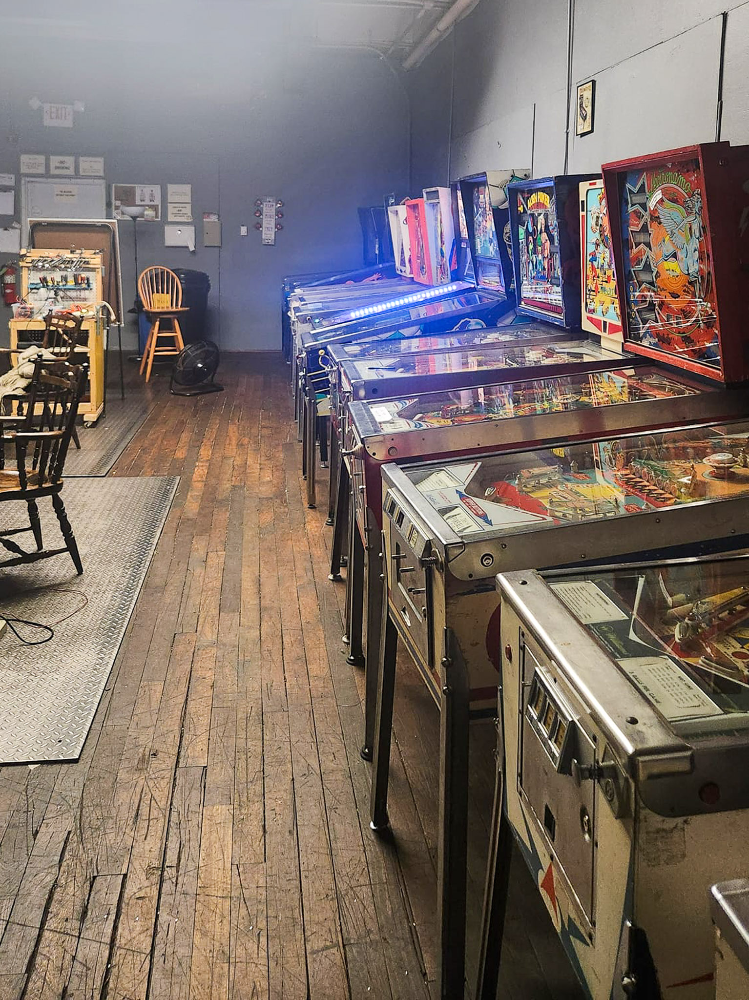
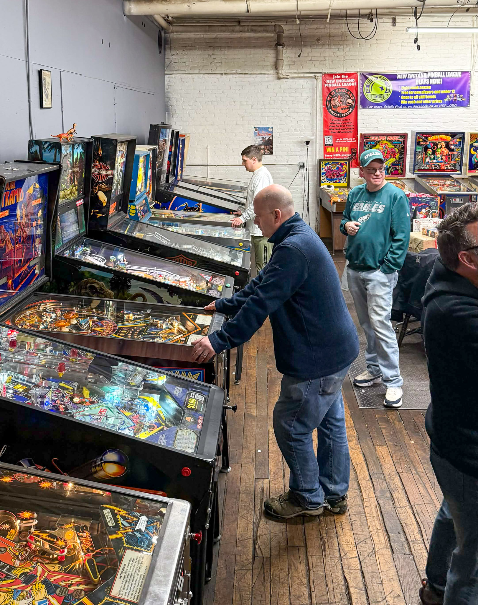

The Southern New Hampshire Pinball Club is a nonprofit social club based in Nashua, dedicated to the enjoyment, preservation, and hands-on experience of pinball machines.
The club was founded about 10 years ago by a small group of people who wanted a place to come together, work on their machines, share knowledge, and just enjoy the pinball lifestyle. Over the years, that spirit has grown into a community known for keeping machines running, helping each other learn repairs, and diving into everything from modern games to classic electromechanical (EM) machines.
Membership works a bit like a 24/7 gym: members have unlimited access to the space, while non-members and guests can schedule time to visit and play for a small fee. During our transition to a new home, membership still supports the club and reserves your place for when we reopen; around-the-clock access resumes with the new space.
For most of our history, we've been operating out of what we affectionately called “the murder warehouse.” It served us well, but after a long run (and a rent increase), it was time to move on and start a new chapter.
Today, we’re building out our next chapter at 48 Bridge St, Unit 3A, Nashua, NH, staying close to where the club was born while creating a more welcoming and sustainable space for the future.
From around the club


Along the way, we've proudly hosted the New England Pinball League for the past decade, and we're excited to expand what we offer with more regular events, maintenance days, tournaments, and member gatherings.
There are more pinball communities now than when we started, and that's a great thing. But we're proud to be the original Southern New Hampshire Pinball Club, and we're committed to continuing that legacy.
If you have any questions, we’d love to hear from you.
Visit or get involved
Our new location is 48 Bridge St, Unit 3A, Nashua, NH. Use Google Maps for directions and follow Facebook events for reopening announcements, parking notes, and entry details. We’re also transitioning day-to-day chat from Slack to Discord; join Discord as our primary community space. Use member sign-in for accounts and future membership tools, and you can support the move anytime.
Contact
- Location 48 Bridge St, Unit 3A, Nashua, NH
- Email info@snhpinball.com
- Phone (603) 486-8659
Online
Facebook: updates and discussion
Discord: primary chat with members
Slack: legacy channel still in use during migration
Pintastic New England: pinball and game room expo
Former website (museum snapshot): preserved copy of our earlier Wix site before we moved to this one.